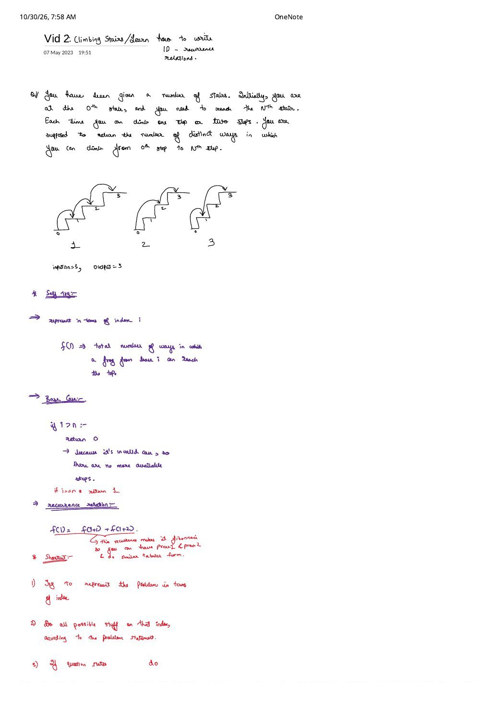

Climbing Stairs & How to Write 1D DP Recurrence Relations
Expanded from handwritten competitive coding study note: 08_Vid_2.pdf
How do you recognize a 1D Dynamic Programming problem in the wild when the word "Fibonacci" appears nowhere in the prompt? 08_Vid_2.pdf uses Climbing Stairs (LeetCode 70 / CodeStudio Count Ways To Reach The $N$-th Stairs) to introduce a universal 3-step template for translating word problems directly into clean index recurrences.
1. Problem Statement & Visual Enumeration ($N = 3$)
You stand initially on the $0^{\text{th}}$ stair and need to reach the $N^{\text{th}}$ stair. Each move climbs either $1$ step or $2$ steps. Return the total number of distinct step sequences from $0$ to $N$.
08_Vid_2.pdf p.1 for $N = 3$: output $= 3$ distinct trajectories.2. The 3-Step Shortcut for Writing Any 1D Recurrence
Striver's 3-Step 1D Recurrence Recipe (08_Vid_2.pdf p.1–2)
- Represent the problem in terms of an index $i$: Even when no array is given, treat each stair $0, 1, \dots, N$ as an index!
- Perform all allowed actions on index $i$: Explore every move permitted by the problem statement (here: jump $+1$ or jump $+2$).
- Aggregate according to what the question asks:
- "Count all distinct ways" $\implies$ sum all recursive results: $\text{way}_1 + \text{way}_2$.
- "Find the minimum / maximum" $\implies$ take $\min(\dots)$ or $\max(\dots)$ over all valid choices.
3. Forward "Self-Try" State vs. Backward Fibonacci State
In the handwritten "Self try" on page 1, the problem is formulated forward from stair $0$ toward $N$:
- State: $f(i) =$ total number of ways to reach top stair $N$ starting from stair $i$ (answer $= f(0)$).
- Base Cases:
if (i == n) return 1;— standing on the destination stair counts as $1$ completed way (stay put).if (i > n) return 0;— overshooting past $N$ (e.g., jumping $+2$ from $N - 1$ to $N + 1$) is invalid and contributes $0$ ways.
- Recurrence: $f(i) = f(i + 1) + f(i + 2)$.
By symmetry (setting $k = N - i$, the number of remaining stairs), this forward recurrence is identical to backward Fibonacci:
$$g(k) = g(k - 1) + g(k - 2), \qquad g(0) = 1,\;\; g(1) = 1$$Why $g(0) = 1$? Standing at $0$ needing to reach $0$ has exactly $1$ empty sequence $()$—which also makes $g(2) = g(1) + g(0) = 1 + 1 = 2$ ways ($(1+1)$ and $(2)$) work seamlessly without special-casing $N = 2$!
4. C++ Progression to $O(1)$ Space & $O(\log N)$ Matrix Exponentiation
#include <bits/stdc++.h>
using namespace std;
// 1. Forward Memoization (matching handwritten `Self try` in 08_Vid_2.pdf)
long long climbForwardMemo(int i, int n, vector<long long>& dp) {
if (i > n) return 0; // Invalid overshoot
if (i == n) return 1; // Reached target stair N
if (dp[i] != -1) return dp[i];
return dp[i] = climbForwardMemo(i + 1, n, dp) + climbForwardMemo(i + 2, n, dp);
}
// 2. Bottom-Up O(1) Space Optimization — Time O(N), Space O(1)
long long climbStairs(int n) {
if (n <= 1) return 1;
long long prev2 = 1; // ways to reach stair 0
long long prev = 1; // ways to reach stair 1
for (int i = 2; i <= n; ++i) {
long long curr = prev + prev2;
prev2 = prev;
prev = curr;
}
return prev;
}
// 3. Bonus for N up to 10^18 (CodeStudio / Contest hard constraints): O(log N) Matrix Power
struct Mat2 {
long long a[2][2];
};
Mat2 mul(const Mat2& X, const Mat2& Y, long long mod) {
Mat2 Z{{{0, 0}, {0, 0}}};
for (int i = 0; i < 2; ++i)
for (int k = 0; k < 2; ++k)
for (int j = 0; j < 2; ++j)
Z.a[i][j] = (Z.a[i][j] + X.a[i][k] * Y.a[k][j]) % mod;
return Z;
}
long long climbStairsMatrixFast(long long n, long long mod = 1000000007LL) {
if (n <= 1) return 1;
Mat2 res{{{1, 0}, {0, 1}}}, base{{{1, 1}, {1, 0}}};
for (; n > 0; n >>= 1) {
if (n & 1) res = mul(res, base, mod);
base = mul(base, base, mod);
}
return res.a[0][0]; // [g(n), g(n-1)]^T = [[1,1],[1,0]]^(n-1) * [1, 1]^T = first entry of M^n
}5. Complexity & Key Edge Cases
- Time & Space: Rolling-variable DP runs in $\Theta(N)$ time and $\Theta(1)$ space; binary matrix exponentiation solves $N \le 10^{18}$ in $\Theta(\log N)$ time and $\Theta(1)$ space.
- Zero-th stair ($N = 0$): Some platforms define $N = 0 \implies 1$ way (do nothing), while others specify $N \ge 1$. Returning $1$ for $N = 0$ is combinatorially consistent ($0! = 1$, empty move sequence) and keeps $g(2) = g(1) + g(0) = 2$.
- Why
return 0on $i > N$ works for counting, NOT minimization: Adding $0$ is the identity element for $+$, sof(i+1) + 0safely ignores invalid jumps. In our very next note (Frog Jump), where+changes tomin(...), returning0on out-of-bounds becomes a fatal bug!
From the Handwritten Notes
View original handwritten page — Vid 2 (Page 1): Climbing Stairs Diagram, Forward Self-Try & 3-Step Shortcut


08_Vid_2.pdf p.1 — Problem statement, $N = 3$ staircase trace, forward recurrence $f(i) = f(i+1) + f(i+2)$, and steps 1–2 of the 1D DP shortcut.